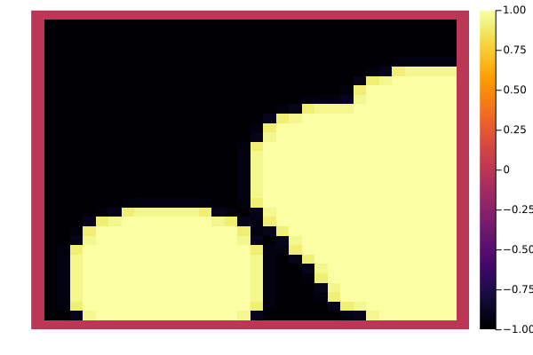

Bachelor Thesis
Table of Contents
1. Cahn-Hilliard equation
is a partial differential equation (PDE) solving the state of a two-phase fluid(Wu 2022). The form of the Cahn-Hilliard (CH) equation used in this thesis is:
\begin{equation} \label{org8d07176} \begin{aligned} \phi _t(x,t) &= \nabla \cdot(M(\phi)\nabla\mu) \\ \mu &= - \varepsilon^2 \Delta\phi + W'(\phi) \end{aligned} \end{equation}where \( \phi\) is a phase-field variable representing the different states of the fluids through an interval \(I=[-1,1] \)
\begin{align*} \phi &= \begin{cases} 1 & \phi = \text{phase 1} \\ -1 & \phi =\text{ phase 2} \end{cases} \end{align*}\(\varepsilon > 0 \) is a constant correlated with boundary thickness. and \(\mu\) is the chemical potential(Wu 2022)
In this thesis we assume \(M(\phi) = 1 \), simplifying the CH equation used in (Wu 2022) (Shin, Jeong, and Kim 2011)
The advantages of the CH Approach as compared to traditional boundary coupling, are for example: “explicit tracking of the interface” (Wu 2022), as well as “evolution of complex geometries and topological changes […] in a natural way” (Wu 2022). In practice it enables linear interpolation between different formulas on different phases.
1.1. Derivation from paper
1.1.1. Free energy
The Cahn Hillard Equations can be motivated Using a Ginzburg Landau type free energy equation:
\begin{align*} \label{org12af922} E^{\text{bulk}} = \int_{\Omega} \frac{\varepsilon^2}{2} |\nabla \phi |^2 + W(\phi) \, dx \end{align*}where \(W(\phi) \) denotes the (Helmholtz) free energy density of mixing.“” (Wu 2022) and we approximate it in further calculations as \(W(\phi) = \frac{(1-\phi ^2)^2}{4}\) like in (Shin, Jeong, and Kim 2011)
The chemical potential then follows as derivative of Energy in respect to time.
\begin{align*} \mu &= \frac{\delta E_{bulk}(\phi)}{\delta \phi} = -\varepsilon^2 \Delta \phi + W'(\phi) \end{align*}1.1.2. TODO Derivation by mass balance
We motivate the Cahn Hillard equation as follows: consider
\begin{equation} \label{orgea9f9db} \partial_t \phi + \nabla \cdot J = 0 \end{equation}where J is mass flux. \eqref{orgea9f9db} then states that the change in mass balances the change of the phase field. Using the no-flux boundary conditions:
\begin{align} J \cdot n &= 0 & \partial\Omega &\times (0,T)\\ \partial_n\phi &= 0 & \partial\Omega &\times (0,T) \end{align}conservation of mass follows see(Wu 2022).
\begin{equation} \label{orgb385939} \begin{aligned} \frac{d}{dt}\int_{\Omega}\phi&=\int_{\Omega}\frac{\partial \phi}{\partial t} dV \\ &= - \int_{\Omega} \nabla \cdot J \ dV\\ &= - \int_{\partial\Omega} J \cdot n \ dA \\ &= 0 \end{aligned} \end{equation}Using:
\begin{align} J &= - \nabla \mu \end{align}which conceptionally sets mass flux to equalize the potential energy gradient, leads to the formulation of the CH equations as stated above. Additionally, the boundary conditions evaluate to:
\begin{equation} \label{org6f45652} \begin{aligned} - \nabla \mu &= 0 \\ \partial_n \phi &= 0 \end{aligned} \end{equation}i.e. no flow leaves and potential on the border doesn’t change. Then for \(\phi \) then follows:
\begin{align*} \frac{d}{dt}E^{bulk}(\phi(t)) &= \int_{\Omega} ( \varepsilon^2 \nabla \phi \cdot \nabla \partial_t \phi + W'(\phi) \partial_t \phi) \ d x \\ &=\int_{\Omega} (\varepsilon^2\nabla\phi + W'(\phi))\partial_t\phi \ dx\\ &=\int_{\Omega} \mu \partial_t \phi \ dx\\ &= \int_{\Omega} \mu \cdot \Delta\mu \\ &= -\int_{\Omega} \nabla\mu \cdot \nabla\mu + \int_{\partial\Omega} \mu \nabla\phi_t \cdot n \ dS \\ &\stackrel{\partial_n\phi = 0}{=} - \int_{ \Omega } |\nabla \mu|^2 \ d x, & \forall t \in (0,T) \end{align*}hence the Free Energy is decreasing in time.
2. Baseline multi-grid solver:
As baseline for further experiments we use a two-grid method based on finite differences as defined in(Shin, Jeong, and Kim 2011).
2.1. Discretization:
it discretizes the phase-field ,\( \phi \), and chemical potential ,\( \mu \), into grid-wise functions \(\phi_{ij}, \mu_{ij} \) and defines the partial derivatives \( D_xf_{ij}, \ D_yf_{ij} \) using differential quotients:
\begin{align} D_xf_{i+\frac{1}{2} j} &= \frac{f_{i+1j} - f_{ij}}{h} & D_yf_{ij+\frac{1}{2}} &= \frac{f_{ij+1} - f_{ij}}{h} \end{align}for \( \nabla f, \Delta f \) then follows:
\begin{align*} \label{org0dbbf07} \nabla_d f_{ij} &= (D_x f_{i+1j} , \ D_y f_{ij+1}) \\ \Delta_d f_{ij} &= \frac{D_x f_{i+\frac{1}{2}j} - D_x f_{i-\frac{1}{2}j} + D_y f_{ij+\frac{1}{2}} - D_y f_{ij-\frac{1}{2}}}{h} = \nabla_d \cdot \nabla_d f_{ij} \end{align*}the authors(Shin, Jeong, and Kim 2011) further adapt the discretized phase-field by the characteristic function of the domain \( \Omega\):
\begin{align*} G(x,y) &= \begin{cases} 1, & (x,y) \in \Omega \\ 0, & (x,y) \not\in \Omega \end{cases} \end{align*}To simplify notation we use the following abbreviations:
| Math | Code |
| \( \Sigma_G f_{ij} = G_{i+\frac{1}{2}j} f^{n + \frac{1}{2},m}_{i+1j} + G_{i-\frac{1}{2}j} f^{n + \frac{1}{2},m}_{i-1j} + G_{ij+\frac{1}{2}} f^{n + \frac{1}{2},m}_{ij+1} + G_{ij-\frac{1}{2}} f^{n + \frac{1}{2},m}_{ij-1} \) | discrete_weigted_neigbour_sum(i,j,...) |
| \( \Sigma_G = G_{i+\frac{1}{2}j} + G_{i-\frac{1}{2}j} + G_{ij+\frac{1}{2}} + G_{ij-\frac{1}{2}} \) | neighbours_in_domain(i,j,G) |
function neighbours_in_domain(i, j, G, len, width) ( G(i + 0.5, j, len, width) + G(i - 0.5, j, len, width) + G(i, j + 0.5, len, width) + G(i, j - 0.5, len, width) ) end function discrete_G_weigted_neigbour_sum(i, j, arr, G, len, width) ( G(i + 0.5, j, len, width) * arr[i+1, j] + G(i - 0.5, j, len, width) * arr[i-1, j] + G(i, j + 0.5, len, width) * arr[i, j+1] + G(i, j - 0.5, len, width) * arr[i, j-1] ) end
We can then write the, often occurring, modified Laplacian \( \nabla_d (G \nabla_df_{ij}) \) as
\begin{align*} \nabla_{d}(G \nabla_df_{ij}) &= \frac{\Sigma_Gf_{ij} - \Sigma_G\cdot f_{ij}}{h^2} \end{align*}To account for no-flux boundary conditions and arbitrary shaped domains. The authors (Shin, Jeong, and Kim 2011) then define the discrete CH equation adapted for the domain, as:
\begin{equation} \label{org26094ca} \begin{aligned} \frac{\phi_{ij}^{n+1} - \phi_{ij}^n}{\Delta t} &= \nabla _d \cdot (G_{ij} \nabla_d \mu_{ij}^{n+\frac{1}{2}} ) \\ \mu_{ij}^{n+\frac{1}{2}} &= 2\phi_{ij}^{n+1} - \varepsilon^2 \nabla_d \cdot (G_{ij} \nabla _d \phi_{ij}^{n+1} ) + W'(\phi_{ij}^n) - 2\phi _{ij}^n \end{aligned} \end{equation}and derive a numerical scheme from these implicit equations.
2.2. Adaptations to the simplified problem
Even tough this work uses rectangular domains, we simplify the adaptation of the algorithm by the domain indicator function, as well as 0 padding, in order to correctly include the boundary conditions of the CH equation. Therefore, the internal representation of the adapted algorithm considers phase-field ,\( \phi \), and chemical potential field ,\( \mu \), as two-dimensional arrays with the shape \( (N_x + 2 , N_y + 2) \) in order to accommodate padding. Where Nx and Ny are the number of steps in x-/y-direction, respectively. Hence, we define the discrete domain function as:
\begin{align*} G_{ij} &= \begin{cases} 1, & (i,j) \in [2,N_x+1] \times [2,N_y+1] \\ 0, & \text{else} \end{cases} \end{align*}function G(i, j, len, width) if 2 <= i <= len + 1 && 2 <= j <= width + 1 return 1.0 else return 0.0 end end
2.3. PDE as Operator
We derive the iteration operator \( L(\phi^{n+1} , \mu^{n+\frac{1}{2}}) = (\zeta^n ,\psi^n) \)as in(Shin, Jeong, and Kim 2011).
\begin{align*} L \begin{pmatrix} \phi^{n+1}_{ij} \\ \mu^{n+\frac{1}{2}}_{ij} \end{pmatrix} &= \begin{pmatrix} \frac{\phi^{n+1}_{ij}}{\Delta t} - \nabla _d \cdot ( G_{ij} \nabla _d \mu^{n+\frac{1}{2}}_{ij} ) \\ \varepsilon^2 \nabla _d \cdot (G \nabla_d \phi_{ij}^{n+1}) - 2\phi_{ij}^{n+1} + \mu_{ij}^{n+\frac{1}{2}} \end{pmatrix} \end{align*}function L(solver::multi_solver,i,j , phi , mu) xi = solver.phase[i, j] / solver.dt - (discrete_G_weigted_neigbour_sum(i, j, solver.potential, G, solver.len, solver.width) - neighbours_in_domain(i, j, G, solver.len, solver.width) * mu )/solver.h^2 psi = solver.epsilon^2/solver.h^2 * (discrete_G_weigted_neigbour_sum(i, j, solver.phase, G, solver.len, solver.width) - neighbours_in_domain(i, j, G, solver.len, solver.width) * phi) - 2 * phi + mu return [xi, psi] end
This operator follows from \eqref{org26094ca} by separating implicit and explicit terms \( L \) and \( (\zeta^n_{ij} , \psi^n_{ij})^T \), respectively.
\begin{align*} \begin{pmatrix} \zeta^n \\ \psi^n \end{pmatrix} &= \begin{pmatrix} \frac{\phi_{ij}^{n}}{\Delta t}\\ W'(\phi_{ij}^n) - 2\phi_{ij}^n \end{pmatrix} \end{align*}Due to being explicit, we know everything needed to calculate \( (\zeta^n_{ij} , \psi^n_{ij})^T \). We compute those values once for every time step, and store them in the solver.
function set_xi_and_psi!(solver::T) where T <: Union{multi_solver , relaxed_multi_solver} xi_init(x) = x / solver.dt psi_init(x) = solver.W_prime(x) - 2 * x solver.xi[2:end-1, 2:end-1] = xi_init.(solver.phase[2:end-1,2:end-1]) solver.psi[2:end-1, 2:end-1] = psi_init.(solver.phase[2:end-1,2:end-1]) return nothing end
Furthermore, as it enables a Newton iteration, we derive its derivative with respect to the current grid point \( (\phi^{n+1}_{ij} , \mu^{n+\frac{1}{2}}_{ij})^{T} \):
\begin{align*} DL\begin{pmatrix} \phi \\ \mu \end{pmatrix} &= \begin{pmatrix} \frac{1}{\Delta t} & \frac{1}{h^2}\Sigma_{G} \\ -\frac{\varepsilon^2}{h^2}\Sigma_{G} - 2 & 1 \end{pmatrix} \end{align*}function dL(solver::multi_solver , i , j) return [ (1/solver.dt) (1/solver.h^2*neighbours_in_domain(i,j,G,solver.len , solver.width)); (-1*solver.epsilon^2/solver.h^2 * neighbours_in_domain(i,j,G,solver.len , solver.width) - 2) 1] end
2.4. V-cycle approach
The numerical method proposed in (Shin, Jeong, and Kim 2011) consists of a V-cycle multi-grid method derived from previously stated operators. Specificly we use a two-grid implementation consisting of
- a Gauß-Seidel relaxation for smoothing.
- restriction and prolongation methods between grids \( h \leftrightarrow H \).
- a Newton iteration to solve \( L(x,y)_H = L(\bar{x} , \bar{y}) + (d_h , r_h) \).
The V-cycle of a two-grid method using pre and post smoothing is then stated by:
function v_cycle!(grid::Array{T}, level) where T <: Union{multi_solver , relaxed_multi_solver} solver = grid[level] #pre SMOOTHing: SMOOTH!(solver, 400, true) d = zeros(size(solver.phase)) r = zeros(size(solver.phase)) # calculate error between L and expected values for I in CartesianIndices(solver.phase)[2:end-1, 2:end-1] d[I], r[I] = [solver.xi[I], solver.psi[I]] .- L(solver, I.I..., solver.phase[I], solver.potential[I]) end restrict_solver!(grid[level], grid[level+1]) solver = grid[level+1] solution = deepcopy(solver) d_large = restrict(d, G) r_large = restrict(r, G) u_large = zeros(size(d_large)) v_large = zeros(size(d_large)) #Newton Iteration for solving smallgrid for i = 1:300 for I in CartesianIndices(solver.phase)[2:end-1, 2:end-1] diffrence = L(solution, I.I..., solution.phase[I], solution.potential[I]) .- [d_large[I], r_large[I]] .- L(solver, I.I..., solver.phase[I], solver.potential[I]) #diffrence = collect(L(solution, I.I...)) .- collect(L(solver, I.I...)) #diffrence = [d_large[I] , r_large[I]] local ret = dL(solution, I.I...) \ diffrence u_large[I] = ret[1] v_large[I] = ret[2] end solution.phase .-= u_large solution.potential .-= v_large end u_large = solver.phase .- solution.phase v_large = solver.potential .- solution.potential solver = grid[level] solver.phase .+= prolong(u_large , G) solver.potential .+= prolong(v_large, G) SMOOTH!(solver, 800, true) end
So let’s take a closer look at the internals, namely the phase field after pre-SMOOTHing \( \bar{\phi} \), the phase residuals of \( \left[ L(\bar{\phi_{ij}}, \bar{\mu_{ij}}) - (\zeta_{ij} , \psi_{ij}) \right]_{ij \in \Omega} \) and the result of the Newton iteration on coarsest level.

After a few iterations, V-cycle exhibits the following behavior:
set_xi_and_psi!(solver) pbar = ProgressBar(total = 1000) anim = @animate for i in 1:100 for j in 1:10 v_cycle!(testgrd, 1) update(pbar) end set_xi_and_psi!(testgrd[1]) heatmap(testgrd[1].phase , clim =(-1,1) , framestyle=:none ) end gif(anim , "images/iteration.gif" , fps = 10)

2.5. SMOOTH operator
The authors(Shin, Jeong, and Kim 2011)derived Gaus-Seidel Smoothing from:
\begin{align*} L \begin{pmatrix} \phi^{n+1}_{ij} \\ \mu^{n+\frac{1}{2}}_{ij} \end{pmatrix} &= \begin{pmatrix} \zeta^n_{ij} \\ \psi^n_{ij} \end{pmatrix} \end{align*}solved for \( \phi , \mu \). SMOOTH consists of point-wise Gauß-Seidel relaxation, by solving L for \( \overline{\phi} ,\overline{\mu} \) with the initial guess for \( \zeta^n , \psi^n \).
\begin{align} SMOOTH( \phi^{n+1,m}_{ij}, \mu^{n + \frac{1}{2},m}_{ji}, L_h , \zeta^n , \psi^n ) \end{align}and we implement it as
function SMOOTH!( solver::multi_solver, iterations, adaptive ) for k = 1:iterations old_phase = copy(solver.phase) for I in CartesianIndices(solver.phase)[2:end-1, 2:end-1] i, j = I.I bordernumber = neighbours_in_domain(i, j, G, solver.len, solver.width) coefmatrix = dL(solver, i,j ) b = [ ( solver.xi[i, j] + discrete_G_weigted_neigbour_sum( i, j, solver.potential, G, solver.len, solver.width ) / solver.h^2 ), ( solver.psi[i, j] - (solver.epsilon^2 / solver.h^2) * discrete_G_weigted_neigbour_sum( i, j, solver.phase, G, solver.len, solver.width ) ) ] res = coefmatrix \ b solver.phase[i, j] = res[1] solver.potential[i, j] = res[2] end if adaptive && LinearAlgebra.norm(old_phase - solver.phase) < 1e-8 #println("SMOOTH terminated at $(k) succesfully") break end end end

2.6. Test Data:
For testing and later training we use a multitude of different phase-fields, notably an assortment of randomly placed circles, squares, and arbitrary generated values.
| Size | blobs | blobsize | norm |
|---|---|---|---|
| 64 | 10 | 10 | 2 |
| 64 | 10 | 10 | 100 |
| 512 | 20 | 50 | 2 |
function testdata(gridsize , blobs , radius ,norm) rngpoints = rand(1:gridsize, 2, blobs) M = zeros(gridsize,gridsize) .- 1 for p in axes(rngpoints , 2) point = rngpoints[:, p] for I in CartesianIndices(M) if (LinearAlgebra.norm(point .- I.I , norm) < radius) M[I] = 1 end end end M end

Figure 1: Examples of different phase-fields used as the initial condition in this work.
3. Numerical Evaluation
The analytical CH equation exhibits mass conservation \eqref{orgea9f9db} and a decrease in Energy \( E_{bulk} \) \eqref{org12af922}. Therefore, we use discrete variants of those concepts as necessary conditions for a “good” solution. Furthermore, since \( E_{bulk} \) is closely correlated with potential Energy \( \mu \), we evaluate this difference as quality of convergence.
3.1. Energy Evaluations
As discrete energy measure we use
\begin{align*} E^{\text{bulk}} &= \sum_{i,j \in \Omega} \frac{\varepsilon^2}{2} |G\nabla \phi_{ij} |^2 + W\left(\phi_{ij}\right) \, dx \\ &= \sum_{i,j \in \Omega} \frac{\varepsilon^2}{2} G_{i+\frac{1}{2}j}D_x\phi_{i+\frac{1}{2}j} ^2 + G_{ij+\frac{1}{2}}D_y\phi_{ij+\frac{1}{2}}^2 + W\left(\phi_{ij}\right) \, dx \\ \end{align*}function bulk_energy(solver::T) where T <: Union{multi_solver , relaxed_multi_solver} energy = 0 dx = CartesianIndex(1,0) dy = CartesianIndex(0,1) W(x) = 1/4 * (1-x^2)^2 for I in CartesianIndices(solver.phase)[2:end-1,2:end-1] i,j = I.I energy += solver.epsilon^2 / 2 * G(i+ 0.5,j ,solver.len, solver.width) * (solver.phase[I+dx] - solver.phase[I])^2 + G(i,j+0.5,solver.len ,solver.width) * (solver.phase[I+dy] - solver.phase[I])^2 + W(solver.phase[I]) end return energy end
3.2. Massbalance
we calculate mass balance as:
\begin{align*} bal &= \frac{\sum_{i,j \in \Omega} \phi_{ij}}{|\{(i,j) \in \Omega\}|} \end{align*}such that \( b = 1 \) means there is only phase one \( \phi \equiv 1 \) and \( b = -1 \) only phase -1 \( \phi \equiv -1 \)
3.3. Tests
4. Relaxed Problem
In effort to decrease the order of complexity, we propose the following relaxation to the classical Cahn Hillard Equation:
\begin{equation} \label{org4e1e541} \begin{aligned} \partial_t \phi^\alpha &= \Delta \mu \\ \mu &= \varepsilon ^2 \alpha(c^\alpha - \phi^\alpha) + W'(\phi) \end{aligned} \end{equation}this in turn requires solving an additional PDE each time-step to calculate \(c\). \( c \) is the solution of the following elliptical PDE:
\begin{align*} - \Delta c^\alpha + \alpha c^a &= \alpha \phi ^\alpha \end{align*}As ansatz for the numerical solver we propose
\begin{equation} \label{orgf2c0d48} \begin{aligned} \frac{\phi_{ij}^{n+1,\alpha} - \phi_{ij}^{n,\alpha}}{\Delta t} &= \nabla _d \cdot (G_{ij} \nabla_d \mu_{ij}^{n+\frac{1}{2},\alpha} ) \\ \mu_{ij}^{n+\frac{1}{2},\alpha} &= 2\phi_{ij}^{n+1,\alpha} - \varepsilon^2 a(c_{ij}^{n+1,\alpha} - \phi_{ij}^{n+1,\alpha}) + W'(\phi_{ij}^{n,\alpha}) - 2\phi _{ij}^{n,\alpha} \end{aligned} \end{equation}this approach is inspired by \eqref{orgf2c0d48} adapted to the relaxed Cahn-Hiliard equation \eqref{org26094ca}.
4.1. relaxed operators:
we then adapt the multi-grid solver proposed earlier to the relaxed Problem by replacing the differential operators by their discrete counterparts as defined in \eqref{org0dbbf07}, and expand the m
4.1.1. L Relaxed
for the reformulation of the iteration in terms of Operator \(L\) then follows:
\begin{align*} L \begin{pmatrix} \phi ^{n+1,\alpha} \\ \mu^{n+\frac{1}{2},\alpha} \end{pmatrix} &= \begin{pmatrix} \frac{\phi^{n+1,m,\alpha}_{ij}}{\Delta t} - \nabla _d \cdot (G_{ji} \nabla _d \mu^{n + \frac{1}{2},m,\alpha}_{ji}) \\ \varepsilon ^2 \alpha (c^\alpha - \phi^{n+1,m,\alpha}_{ij}) - 2\phi ^{n+1,m,\alpha}_{ij} -\mu^{n + \frac{1}{2},m,\alpha}_{ji} \end{pmatrix} \end{align*}function L(solver::relaxed_multi_solver,i,j , phi , mu) xi = solver.phase[i, j] / solver.dt - (discrete_G_weigted_neigbour_sum(i, j, solver.potential, G, solver.len, solver.width) - neighbours_in_domain(i, j, G, solver.len, solver.width) * mu )/solver.h^2 psi = solver.epsilon^2 * solver.alpha*(solver.c[i,j] - phi) - 2 * solver.phase[i,j] - solver.potential[i,j] return [xi, psi] end
and its relaxed derivative
\begin{align*} DL\begin{pmatrix} \phi \\ \mu \end{pmatrix} &= \begin{pmatrix} \frac{1}{\Delta t} & \frac{1}{h^2}\Sigma_{G} \\ - \varepsilon^2 \alpha - 2 & 1 \end{pmatrix} \end{align*}function dL(solver::relaxed_multi_solver , i , j) return [ (1/solver.dt) (1/solver.h^2*neighbours_in_domain(i,j,G,solver.len , solver.width)); (-1*solver.epsilon^2 * solver.alpha - 2) 1] end
4.1.2. SMOOTH
and correspondingly the SMOOTH operation expands to:
\begin{align*} SMOOTH( \phi^{n+1,m,\alpha}_{ij}, \mu^{n + \frac{1}{2},m,\alpha}_{ji}, L_h , \zeta^{n,\alpha} , \psi^{n,\alpha} ) \end{align*} \begin{equation} \label{org1d5f40c} \begin{aligned} -\frac{\Sigma_G}{h^2}\overline{\mu}^{n + \frac{1}{2},m,\alpha}_{ji} &= \frac{\phi ^{n+1,m,\alpha}_{ij}}{\Delta t} - \zeta^{n,\alpha}_{ij} - \frac{\Sigma_G\mu_{ij}}{h^2} \\ \varepsilon ^2 \alpha \overline{\phi} ^{n+1,m,\alpha}_{ij} + 2 \phi ^{n+1,m,\alpha}_{ij} &= \varepsilon ^2 \alpha c^{n,\alpha}_{ij} -\mu^{n + \frac{1}{2},m,\alpha}_{ji} - \psi_{ij}^{n,\alpha} \end{aligned} \end{equation}we then solve directly for \( \overline{\mu_{ij}^{n+1,m,\alpha}} \) and \( \overline{\phi_{ij}^{n+1,m,\alpha}} \). This was not done in the original paper(Shin, Jeong, and Kim 2011) as the there required System of linear equations was solved numerically. The relaxation simplifies it to one dimension, and enables explicit solutions:
\begin{align*} \varepsilon^2 \alpha(\phi^\alpha) + 2\phi^\alpha &= \varepsilon^2 \alpha c^\alpha - \frac{h^2}{\Sigma_G} (\frac{\phi^\alpha}{\Delta t} - \zeta^n_{ij} - \frac{1}{h^2} \Sigma_G \mu_{ij}) - \psi_{ij} \end{align*}\( \implies \)
\begin{align*} \varepsilon^2\alpha (\phi^\alpha) + 2\phi^\alpha + \frac{h^2}{\Sigma_G}\frac{\phi^\alpha}{\Delta t} &= \varepsilon^2 \alpha c^\alpha - \frac{h^2}{\Sigma_G} (- \zeta^n_{ij} - \frac{1}{h^2} \Sigma_G \mu_{ij}) - \psi_{ij} \end{align*}\( \implies \)
\begin{align*} (\varepsilon^2 \alpha + 2 + \frac{h^2}{\Sigma_G \Delta t}) \phi^\alpha = \varepsilon^2 \alpha c^\alpha - \frac{h^2}{\Sigma_G}(- \zeta^n_{ij} - \frac{\Sigma_G \mu_{ij}}{h^2} ) -\psi_{ij} \end{align*}solved for \( \phi_{ij}^{n+1\alpha}\) the Smoothing Operator then follows:
function SMOOTH!( solver::relaxed_multi_solver, iterations, adaptive ) for k = 1:iterations old_phase = copy(solver.phase) for I in CartesianIndices(solver.phase)[2:end-1, 2:end-1] i, j = I.I bordernumber = neighbours_in_domain(i, j, G, solver.len, solver.width) solver.phase[I] = (solver.epsilon^2 * solver.alpha * solver.c[I] - solver.h^2 / bordernumber * ( -solver.xi[I] - discrete_G_weigted_neigbour_sum(i,j,solver.potential , G , solver.len , solver.width) / solver.h^2 ) - solver.psi[I]) / (solver.epsilon^2 * solver.alpha + 2 + solver.h^2 / (bordernumber*solver.dt)) solver.potential[I] = (solver.phase[I]/solver.dt - solver.xi[I] - discrete_G_weigted_neigbour_sum(i,j, solver.potential , G , solver.len , solver.width)/solver.h^2) * (-solver.h^2/bordernumber) end if adaptive && LinearAlgebra.norm(old_phase - solver.phase) < 1e-10 #println("SMOOTH terminated at $(k) succesfully") break end end end
using Plots using LaTeXStrings using LinearAlgebra include(pwd() *"/utils.jl") function SMOOTH!( solver::relaxed_multi_solver, iterations, adaptive ) for k = 1:iterations old_phase = copy(solver.phase) for I in CartesianIndices(solver.phase)[2:end-1, 2:end-1] i, j = I.I bordernumber = neighbours_in_domain(i, j, G, solver.len, solver.width) solver.phase[I] = (solver.epsilon^2 * solver.alpha * solver.c[I] - solver.h^2 / bordernumber * ( -solver.xi[I] - discrete_G_weigted_neigbour_sum(i,j,solver.potential , G , solver.len , solver.width) / solver.h^2 ) - solver.psi[I]) / (solver.epsilon^2 * solver.alpha + 2 + solver.h^2 / (bordernumber*solver.dt)) solver.potential[I] = (solver.phase[I]/solver.dt - solver.xi[I] - discrete_G_weigted_neigbour_sum(i,j, solver.potential , G , solver.len , solver.width)/solver.h^2) * (-solver.h^2/bordernumber) end if adaptive && LinearAlgebra.norm(old_phase - solver.phase) < 1e-10 #println("SMOOTH terminated at $(k) succesfully") break end end end SIZE =64 M = testdata(SIZE, 5 , 8, 2); phase = zeros(size(M) .+ 2); phase[2:end-1,2:end-1] = M; mu = copy(phase); W_prime(x) = -x * (1-x^2) function elyps_solver!(solver::relaxed_multi_solver, n) for k in 1:n for i = 2:(solver.len+1) for j = 2:(solver.width+1) bordernumber = neighbours_in_domain(i, j,G, solver.len, solver.width) solver.c[i, j] = ( solver.alpha * solver.phase[i, j] + discrete_G_weigted_neigbour_sum(i, j, solver.c, G, solver.len, solver.width) / solver.h^2 ) / (bordernumber / solver.h^2 + solver.alpha) end end end end solver = relaxed_multi_solver( phase , zeros(size(phase)) , zeros(size(phase)) , zeros(size(phase)) , zeros(size(phase)) , 8e-3 ,1e-3 , 1e-3 , W_prime , size(M , 1) , size(M , 2), 1000001 ) set_xi_and_psi!(solver) elyps_solver!(solver , 2000) SMOOTH!(solver, 1000, true); p2 = heatmap(solver.phase, aspect_ratio=:equal, title="with solving c" , xlim=(2,SIZE) , ylim=(2,SIZE)); savefig(p2,"images/smooth_relaxed.svg")
4.1.3. Relaxed V-cycle
As The difference between both methods is abstracted away in the operators, the relaxed V-cycle Is Identical to its original counterpart. And therefore reused. When solving the only additional step is solving the elliptical equation Testing:
set_xi_and_psi!(solver) pbar = ProgressBar(total = 1000) anim = @animate for i in 1:100 elyps_solver!(solver , 1000) for j in 1:10 v_cycle!(testgrd, 1) update(pbar) end set_xi_and_psi!(testgrd[1]) heatmap(testgrd[1].phase , clim =(-1,1) , framestyle=:none ) end gif(anim , "images/iteration_relaxed2.gif" , fps = 10)

4.2. Elliptical PDE:
on order to solve the relaxed CH Equation the following PDE as to be solved in Each additional time step: or in terms of the characteristic function:
\begin{align*} - \nabla \cdot (G \nabla c^\alpha) + \alpha c^\alpha = \alpha \phi ^\alpha \end{align*}Similarly to the first solver this PDE is solved with a finite difference scheme using the same discretization as before:
4.2.1. Discretization
the Discretization of the PIE expands the differential operators in the same way and proposes an equivalent scheme for solving.
\begin{align*} - \nabla_d \cdot (G_{ij} \nabla_d c_{ij}^\alpha) + \alpha c_{ij}^\alpha &= \alpha \phi_{ij}^\alpha \end{align*}\( \implies \)
\begin{align*} - (\frac{1}{h}(G_{i+\frac{1}{2}j} \nabla c^\alpha_{i+\frac{1}{2}j} + G_{ij+\frac{1}{2}} \nabla c^\alpha_{ij+\frac{1}{2}}) & \\ - (G_{i-\frac{1}{2}j} \nabla c^\alpha_{i-\frac{1}{2}j} + G_{ij-\frac{1}{2}} \nabla c^\alpha_{ij-\frac{1}{2}})) + \alpha c_{ij}^\alpha &= \alpha \phi_{ij}^\alpha \end{align*}\( \implies \)
\begin{align*} - \frac{1}{h^2} ( G_{i+\frac{1}{2}j}(c_{i+1j}^\alpha - c_{ij}^\alpha) & \\ +G_{ij+\frac{1}{2}}(c_{ij+1}^\alpha - c_{ij}^\alpha) & \\ +G_{i-\frac{1}{2}j}(c_{i-1j}^\alpha - c_{ij}^\alpha)& \\ +G_{ij-\frac{1}{2}}(c_{ij-1}^\alpha - c_{ij}^\alpha)) + \alpha c_{ij}^\alpha &=\alpha \phi_{ij}^\alpha \end{align*}As before we abbreviate \( \Sigma_G c^\alpha_{ij} = G_{i+\frac{1}{2}j} c^\alpha_{i+1j} + G_{i-\frac{1}{2}j} c^\alpha_{i-1j} + G_{ij+\frac{1}{2}} c^\alpha_{ij+1} + G_{ij-\frac{1}{2}} c^\alpha_{ij-1} \) and \( \Sigma_G = G_{i+\frac{1}{2}j} + G_{i-\frac{1}{2}j} + G_{ij+\frac{1}{2}} + G_{ij-\frac{1}{2}} \). Then the discrete elliptical PDE can be stated as:
\begin{align} \label{org4391584} -\frac{ \Sigma_G c^\alpha_{ij}}{h^2} + \frac{\Sigma_G}{h^2} c^\alpha_{ij} + \alpha c^\alpha_{ij} &= \alpha\phi^\alpha_{ij} \end{align}- DONE Proposal1 Newton Solver
And then we propose a simple newton Iteration to solve \eqref{org4391584} for \( x = c^\alpha_{ij} \): Let \( F, dF \) be:
\begin{align*} F(x) &= - \frac{\Sigma_Gc^\alpha_{ij}}{h^2} + \frac{\Sigma_G}{h^2} x + \alpha x - \alpha \phi_{ij}^\alpha \end{align*}and \( dF(x) \)
\begin{align*} dF(x) &= - \frac{\Sigma_G}{h^2} + \alpha \end{align*}the implementation then is the following:
as input, we use :
- Proposal2 solver
solving \eqref{org4391584} for \(c_{ij}^\alpha \) then results in.
\begin{align*} \left( \frac{\Sigma_{G}}{h^2} + \alpha \right)c_{ij}^{\alpha} = \alpha\phi^{\alpha}_{ij} + \frac{\Sigma_G c_{ij}^{\alpha}}{h^2} \end{align*}and can be translated to code as follows
function elyps_solver!(solver::relaxed_multi_solver, n) for k in 1:n for i = 2:(solver.len+1) for j = 2:(solver.width+1) bordernumber = neighbours_in_domain(i, j,G, solver.len, solver.width) solver.c[i, j] = ( solver.alpha * solver.phase[i, j] + discrete_G_weigted_neigbour_sum(i, j, solver.c, G, solver.len, solver.width) / solver.h^2 ) / (bordernumber / solver.h^2 + solver.alpha) end end end end